Rail Paths
This path type is for moving map objects and cameras around.
Creation
To start you want to enter the rail path editor.
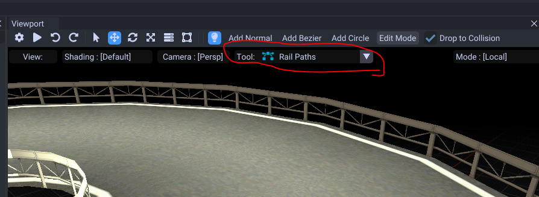
You have 3 path objects you can choose from.
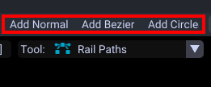
- Normal : Adds a normal path.
- Bezier : Adds a bezier path which has handles to control curves. Best for smooth curves.
- Circle : Adds a bezier circle path.
When you create your path make sure to select it, then press Tab to go into edit mode.
Scale it with T and make sure the points have some distance to edit with.
Normal Curve
These are similar to enemy and item paths.
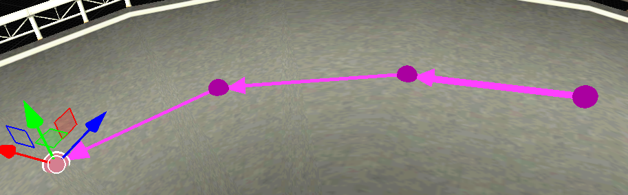
| Shortcuts | Effect |
|---|---|
| Tab | Go into edit mode for the selected path(s) |
| Hold Ctrl | Move both handles as one line if one is being moved around. |
| E | Extrudes. If you extrude in an already connected point, it'll extrude but connect to that current point. |
| G | Move |
| R | Rotate |
| T | Scale |
Bezier Curve
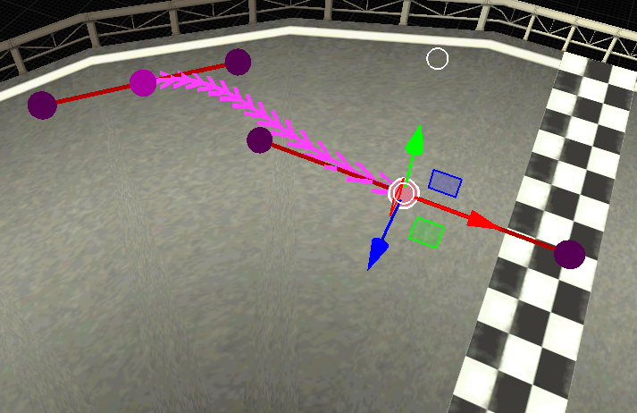
A type with handles to control from. If you are familar with blender it controls very similar.
| Shortcuts | Effect |
|---|---|
| Tab | Go into edit mode for the selected path(s) |
| Hold Ctrl | Move both handles as one line if one is being moved around. |
| E | Extrudes. If you extrude in an already connected point, it'll extrude but connect to that current point. |
| G | Moves both the point and handles if the point is selected. |
| R | Rotates the handles if the point is selected. |
| T | Scales the handles if the point is selected. |
Circle Bezier Curve
Same as a bezier curve but it is pre made as a circle.
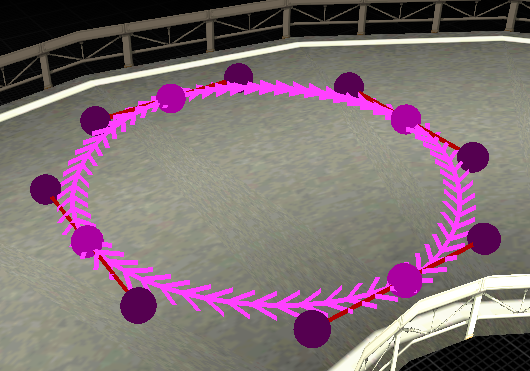
Looping
Select the path (out of edit mode) then check the loop property.
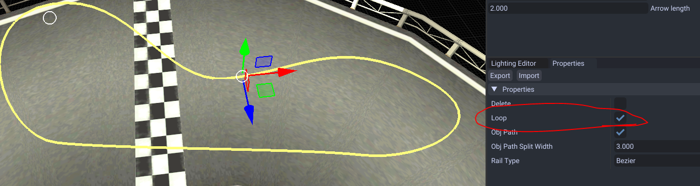
Object Paths
The tool cannot directly edit object paths however you can turn rails to obj paths automatically with this setting.
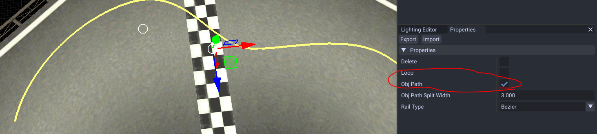
The benefit with this is that objects can move side to side (ie goombas) instead of turning and trying to loop.
Jugem Paths
These types are not supported atm. These control lakitu movement during a return to the lap path return point.
Linking to Objects
Make sure both your rail and object path is visible by clicking on the eye in the tree.
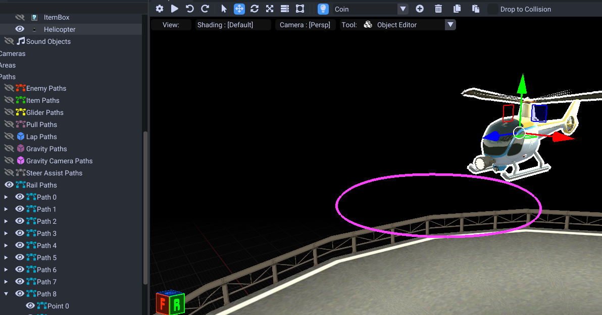
Next select your rail in the dropdown. This one is Path 7.
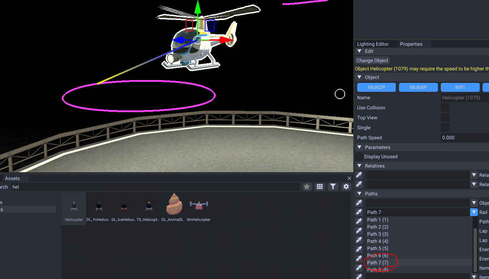
Next we will set the speed.
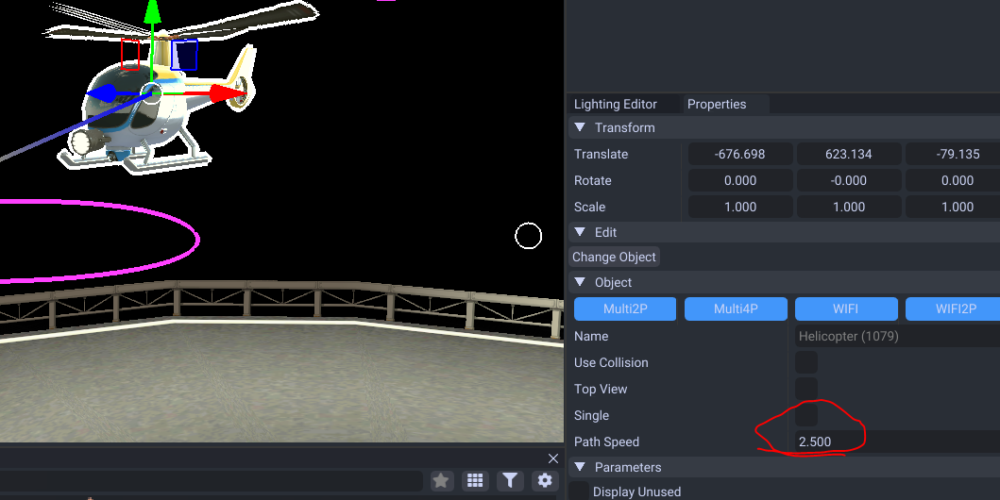
This speed property is usually needed for obj path types but it doesn't hurt to set it anyways.
Next to be sure also set the point param property.
Go into edit mode then select all your points. Here I will edit that to be about 50.
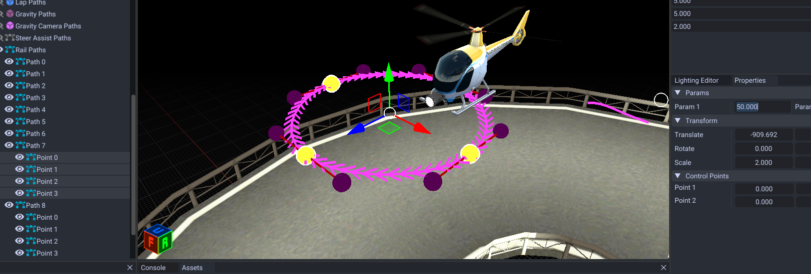
Both these parameters control speed. Some objects use the object speed, some use the rail speed.
The rail speed tends to be alot larger so I suggest using larger values (possibly total time to go through path),
Keep in mind some map objects use rails differently.
Monty Mole/Choropoo Paths
When you do these, the param 2 value determines for it to go out of the ground.
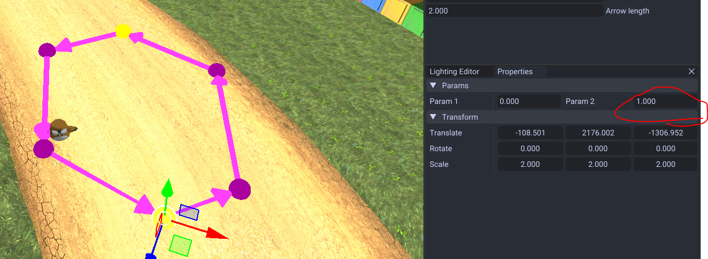